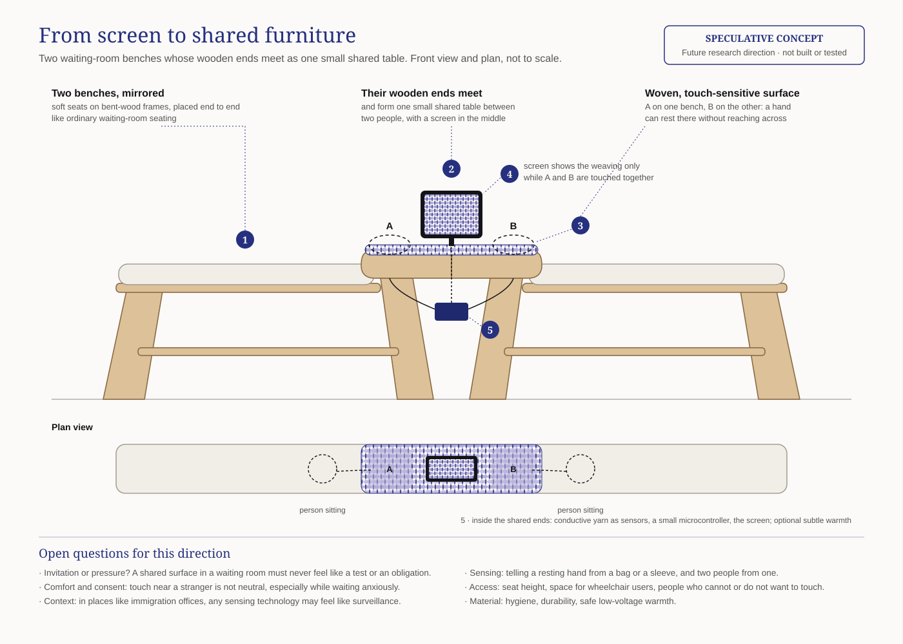

The Loom That Waits
Speculative HCI · Research through Design · 2026
What if a digital loom could only weave through shared human touch?
The Loom That Waits is an interactive textile-inspired artefact exploring how touch, materiality and shared action can shape experiences of co-presence.
Concept
Drawing on my background in textile design, the project reimagines the digital loom as an artefact that responds to individual touch but only begins weaving when two touch points are active simultaneously. When the interaction ends, the woven structure remains as a trace of the encounter.
Research question
How can shared touch and textile-based interaction make co-presence perceptible without prescribing social behaviour?


How it works
- 01 Individual touch. Threads respond to a single touch through subtle movements and changes in tension.
- 02 Shared touch. A second touch activates the weaving process. Light travels through the threads as the textile gradually develops.
- 03 A lasting trace. When participants release the screen, the woven structure remains, becoming part of a shared textile.
Functional digital prototype, designed for tablet interaction. No personal identities are collected.
Questions it explores
- How can the tactile qualities of physical textiles inform digital interaction?
- Can shared material experiences invite interaction without creating social pressure?
- What role can incidental touch play in creating opportunities for interpersonal coordination?
Reflection
An exploratory design artefact, not a validated solution. Rather than claiming to create social connection, it explores the relationship between touch, shared action and material expression.
Prototype in use
Future direction: from screen to shared furniture
A physical iteration could integrate a soft, sensor-enabled textile surface into a shared seating arrangement.
Two adjacent seats would be connected by a small table, with a continuous, accessible textile surface extending along their inner sides. Without requiring participants to deliberately reach towards each other, the arrangement would allow their hands to naturally rest on or encounter the shared material.
Simultaneous touch could activate a digital weaving process displayed on a nearby tablet. A future exploration could also investigate subtle warmth as an additional tactile quality.
This scenario opens questions about incidental interaction, tactile comfort and shared experiences in public waiting environments, such as immigration service offices.
